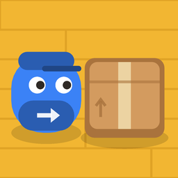

Shove & Tug
Box Puzzle
A box puzzle with a moving crew: one shoves, one tugs, one pushes two at once, one slips through fences. Swipe once, take one step. Plays with one hand, offline.
Taşınma ekibiyle kutu bulmacası: biri iter, biri çeker, biri iki kutuyu birden iter, biri çitlerden geçer. Bir kaydır, bir adım at. Tek elle, internetsiz oynanır.